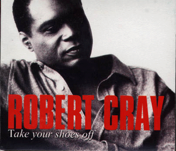

Take Your Shoes Off - The Robert Cray Band

 Songs on the CD
Songs on the CD
- Love Gone To Waste (W. Michell, T. Bngham)
- That Wasn't Me (R. Cray)
- All The Way (R. Cray, S. Turner-Cray)
- There's Nothing Wrong (R. Cray)
- 24-7 Man (M. Rice, J. Tiven, S. Tiven)
- Pardon (R. Cray)
- Let Me Know (R. Cray)
- It's All Gone (S. Jordan, M. Voss)
- Won't You Give Him (One More Chance) (A. Marting, R. Scott)
- Living Proof (J. Pugh)
- What About Me (R. Cray)
- Tollin' Bells (W. Dixon)
The Robert Cray Band
Robert Cray - guitars, vocals, Fender bajo sexto
Jim Pugh - keyboards
Karl Sevareid - bass
Kevin Hayes - drums
The Memphis Horns
Wayne Jackson - trumpet
Andrew Love - tenor sax
Musicians:
Steve Jordan - percussion, keyboards, guitar, background vocals, bass, Fender bajo sexto, snare drum
Jim Horn - tenor sax baritone sax
Jim Spake - tenor sax
James Mitchell - baritone sax
Jack Hale - trombone
Doug Moffet - tenor sax
The Nashelles - background vocals
Jo-El Sonnier - Cajun accordion
Bobby Keys - Tenor sax
Some brief credits:
© Rykodisc
Producer - Steve Jordan
Representation - Mike Kappus - The Rosebud Agency
Photography - Robert Olding
Art Direction and Design - Steven Jurgensmeyer
Other Take Your Shoes Off Links
Back to my Cray page
Created: 3/3/99
Mod: 7/17/03
By: rwhiffen